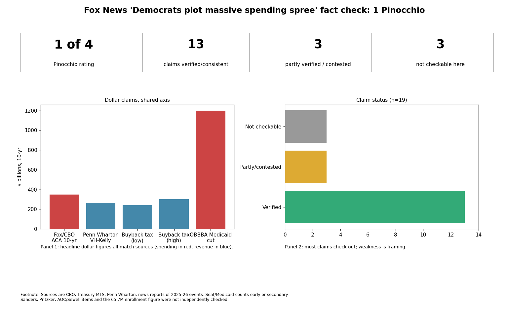

Fact check: Fox News "Democrats plot massive spending spree" (Nov 16, 2026)

Findings: facts mostly hold, framing is slanted - 1 Pinocchio
The numbers I could check match primary or near-primary sources; the weakness is loaded framing ("plot", "spree", "rout") and an unsupported premise that Trump could help.
- Verified: CBO permanent ACA credit extension about $350 billion over 2026-2035 and 3.8 million more insured (CBO, Sept 2025). Medicaid enrollment cut of 13.1 million in 2035 and about $1.2 trillion federal cut (CBO Feb 2026 baseline, via secondary reports). FY2026 deficit $1.992 trillion (Treasury, Oct 16). Penn Wharton: Working Americans' Tax Cut Act raises $264 billion over a decade. Buyback tax 1% to 4% in Stock Buyback Accountability Act; estimates $240-300 billion. Hinojosa $1,500 checks funded by $17 billion from rainy day fund (campaign and Texas Tribune). Trump's Nov 25, 2025 remarks. Democrats won both chambers on Nov 3, 2026, so "rout" is fair.
- Contested or incomplete: "Interest exceeded $1 trillion" is true on gross interest (about $1.4 trillion) and one secondary calculation of net interest ($1.05 trillion), not confirmed in Treasury tables by me. The Cato "up to $600,000" point is real but describes the uncapped eligibility ceiling, not typical recipients; 95% of enrollees earn under 400% of poverty. Tax Foundation scores the Van Hollen-Kelly bill as a static $86 billion revenue loss, which the piece omits. The CBO $350 billion is a 2025 estimate.
- Not checkable here: the Jeffries Nov 4 "manifesto" text (I found only the Oct 14 first-100-days plan coverage), the 65.7 million Medicaid enrollment figure, and the Sanders $12,000, Pritzker 200 proposals and AOC/Sewell items (not searched).
- Misleading even where true: the headline implies a coming "massive spending spree" while citing mostly reversal of existing cuts and offsets proposals; a Trump quote that he would "rather not" extend credits is paired with "some extension may be necessary" to imply support.
Step: claim table
| Claim | Answer | Confidence |
|---|
| CBO ACA $350B, 3.8M | Accurate | High |
| Medicaid -$1.2T, -13M | Accurate | Medium (secondary) |
| Deficit near $2T | Accurate ($1.992T) | High |
| Interest over $1T | Gross yes; net unconfirmed | Medium |
| Penn $264B | Accurate; omits Tax Foundation -$86B | High |
| Buyback $242-300B | Range of estimates, source unclear | Medium |
| Hinojosa $17B/$1,500 | Accurate | High |
| Trump quote | Accurate | High |
| Cato $600,000 | Real but cherry-picked ceiling | Medium |
Sources
- https://www.foxnews.com/politics/democrats-plot-massive-spending-spree-after-midterm-rout-trump-could-help-them-pull-off
- https://floridaphoenix.com/2025/09/18/repub/permanent-extension-of-federal-health-care-subsidies-estimated-to-cost-350-billion/ (CBO)
- https://www.americanactionforum.org/insight/u-s-treasury-fy-2026-deficit-totaled-2-trillion/
- https://budgetmodel.wharton.upenn.edu/p/2026-03-16-working-americans-tax-cut-act-revenue-and-distributional-effects/
- https://www.texastribune.org/2026/11/10/texas-1500-check-gina-hinojosa-bill/
- https://www.nbcnews.com/politics/donald-trump/trump-says-rather-not-extend-obamacare-tax-credits-rcna245998
- https://www.kut.org/politics/2026-11-03/democrats-win-full-control-of-congress-ushering-in-a-new-era-of-divided-government
- https://www.inquirer.com/politics/house-democrats-100-days-agenda-midterm-win-jeffries-healthcare-affordability-oversight-corruption-trump-20261014.html
- https://www.americanactionforum.org/insight/quadrupling-the-stock-buyback-tax-what-are-the-implications/
Caveat: WebFetch returned a summary of the Fox article, not verbatim text, so quote wording was not checked against the page.